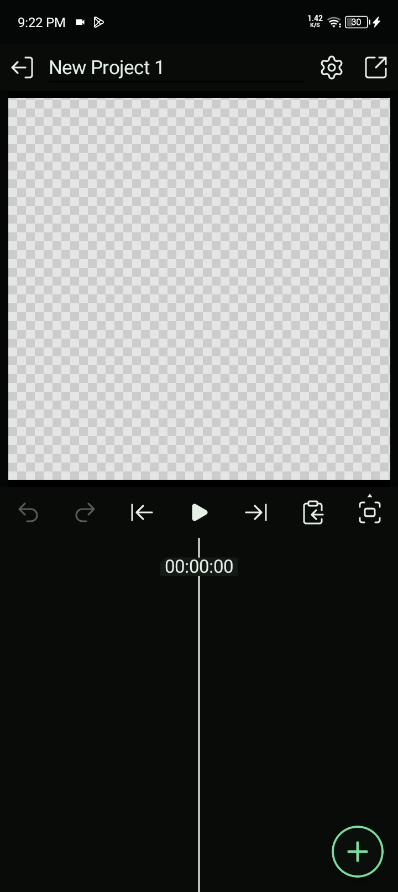

Layers that behave
Shapes, text, media, groups, masks, blend modes and a real stacking order. Keyframe anything you can see.
Timeline firstSchnitt is a full timeline editor that lives on your phone. Layer shapes, text and footage. Pull in 315 Alight effects. Open a plug-in. Then export without babysitting the encoder.
Shapes, text, media, groups, masks, blend modes and a real stacking order. Keyframe anything you can see.
Timeline firstISF, AEX, JSX and shader packages land in the library with their own UI and editable properties — not a lookalike preset.
Own shader per plug-inA device-aware encoder cascade quietly steps down until the file lands. H.264, HEVC, 1080p, 4K, any ratio.
No dead-end renderScrubbing stays responsive while effects compile. Background prep pauses when you hit play, so the frame gets the GPU.
Built for phones
Every control sits where your thumb expects it. Open a tool, change a value, add a keyframe, and keep moving. No mode switching, no hidden menus.
Alight Motion definitions ship as real, editable controls. Unknown IDs are matched by shape, property names and family, then remapped without flattening your keyframes.
Drop an Alight share link or an XML project. Schnitt reads the package, rebuilds the effect stack on its own effects, and reports every property it could not map.
Publish an XMLAlight effect library — the complete 315-effect definition set stays in the external library, with real property labels.
Smarter imported-effect matching — unknown effects are matched by name, id, properties and family, then remapped with values and keyframes intact.
Direct from GitHub Releases. No mirror, no interstitial.